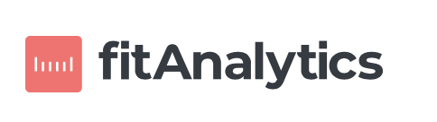

Fit Analytics · Analytics Engineering Lead · Jul 2025 – Present
Upgrading data & analytics at a leading global fashion SaaS

Fit Analytics is a leading global fashion SaaS, powering sizing and personalization for 200+ brands — CK, SHEIN, The North Face. I worked with the company to reimagine data governance and bring the analytics stack into the AI era — migrating and building new infrastructure from scratch using agentic AI, from governed tracking and Kimball-style dbt modeling to a standardized metrics layer.
Step 1 — Tracking
Tracking requirements as a code-based product
The old way: tracking specs lived in Notion docs, misaligned between engineering, product, and data. We replaced it with a code-based spec viewer — events defined generically, then layered with per-feature and per-client coverage. PMs, engineers, and analysts now look at the same source of truth. Enables reliable A/B testing and ROI measurement for every new feature across 200+ partners.
Demo — Tracking Plan Viewer
Step 2 — Metrics Layer
One definition per KPI, across every surface
With a clean data foundation in place, we built a standardized metrics layer on top of Kimball-style dbt models. Every KPI — from partner-facing AOV to internal recommendation rates — has one consistent definition visible across all BI surfaces, dashboards, and AI agent context. No more conflicting numbers between teams.
Demo — AOV Metrics Layer